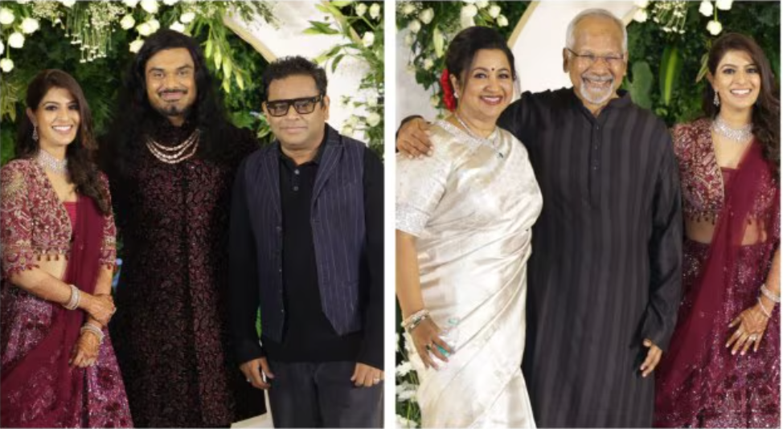
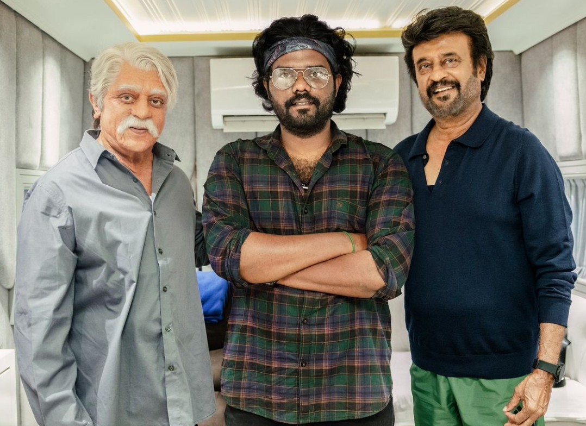

AR Rahman and Mani Ratnam among stars at Varalaxmi Sarathkumar and Nicholai Sachdev’s wedding reception.
From filmmakers like Atlee and Mani Ratnam to actors like Jackie Shroff and Siddharth, some of the biggest names in the film industry attended Varalaxmi Sarathkumar and Nicholai Sachdev's wedding reception in Chennai Actor Varalaxmi Sarathkumar married businessman Nicholai Sachdev on July 3 in an extravagant ceremony in Chennai. The couple later hosted a star-studded wedding reception, attended by prominent figures from the South Indian film industry, including Mani Ratnam, AR Rahman, and several political leaders. Tamil Nadu Chief Minister MK Stalin and his son Udhayanidhi Stalin extended their congratulations to Varalaxmi and Nicholai. The political family also posed for photos with the newlyweds. In one of the iconic pictures Varalaxmi can be seen standing in between her husband Nicholai and her father, veteran actor, politician and filmmaker - Sarathkumar. While Nicholai and Sarathkumar were twinning in black suits, the bride opted for a white sleeveless blouse, teamed with matching lehenga and an oversized transparent claok. In another photo Trisha who was also among the invited guests can be seen giving a kiss on Varalaxmi's cheek while taking a selfie. The actor wore an ivory white suit for the occasion. She also posed with Radhika Sarathkumar in a selfie and a group picture. In a candid photo Rajinikanth can be seen standing with Sarathkumar and Himani as well. The Coolie actor kept it casual as he donned a black shirt.
Kamal Haasan’s Senapathy and Rajinikanth’s Vettaiyan in one frame: Celebrity photographer unveils a rare snap
A viral photo featuring Kamal Haasan and Rajinikanth in their iconic film avatars has left fans of both the stars happy. The image, shared by celebrity photographer Arun Prasath, showcases Kamal in his Senapathy look for the much-awaited film Indian 2, and Rajinikanth in his look for the upcoming movie Vettaiyan. This rare photo has ignited a frenzy among fans, eagerly awaiting the release of both the films.
In the picture, Kamal is seen sporting the look of the ageing vigilante who is seen with a thick moustache. The trailer hints that it is his new look to stay away from the public eye. Meanwhile, Rajinikanth is in his simple and straightforward look for Vettaiyan, in which he is speculated to be playing an undercover cop.
Sharing the photo, Arun Prasath, who is also associated with Indian 2, expressed his excitement on Instagram, stating, “What more could I ask for? Truly blessed to have been in the same studio where ‘Ulaganayagan’ @ikamalhaasan sir & ‘Superstar’ @rajinikanth sir were shooting for their respective films! Thank you Universe @shanmughamshankar sir & @lycaproductions for this once in a lifetime opportunity! Grateful to you!”
On the other hand, Rajinikanth has an exciting lineup with two major projects. Vettaiyan, directed by T. J. Gnanavel of Jai Bhim fame, is a multi-starrer featuring an ensemble cast including Amitabh Bachchan, Fahadh Faasil, Manju Warrier, and Rana Daggubati. The film is set to hit theaters on October 10, 2024. Additionally, Rajinikanth is collaborating with Lokesh Kangaraj for the film Coolie.